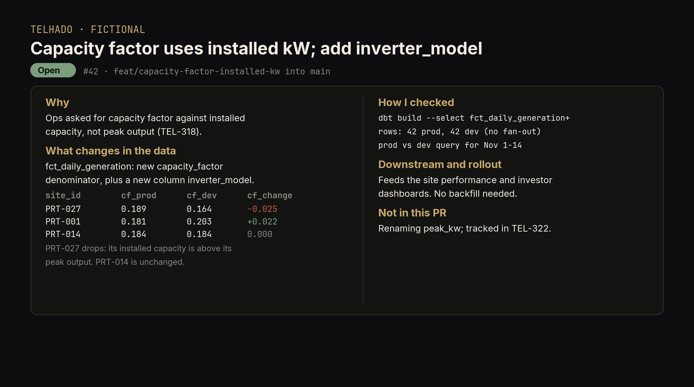
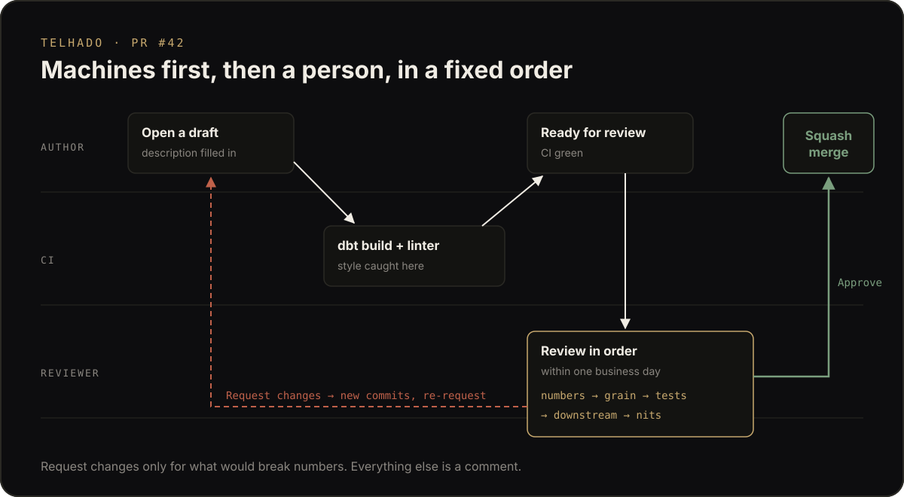
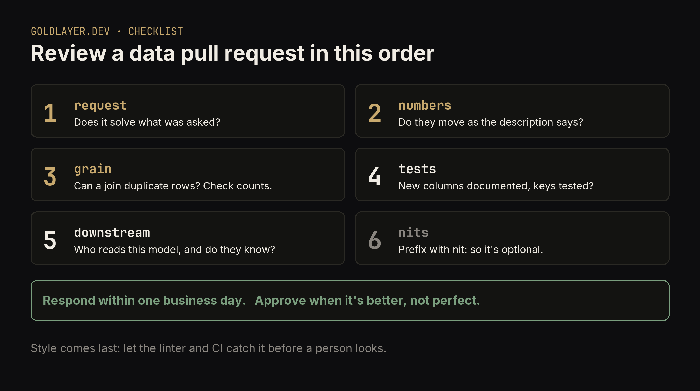

Most pull requests on data teams get reviewed by someone reading SQL. On its own, the SQL says the least about whether the numbers are right.
A reviewer can confirm that a join compiles and a column has a good name. Unless you show them, they can't see that capacity factor at one site just dropped by 13%.
- A SQL diff hides what a change does to the numbers.
- Review time spent on style is time not spent on joins.
- Both sides of the review need one shared order.
Telhado is the fictional rooftop-solar co-op from the git series, and this is the capacity-factor change from Part 2. I ran the comparison query below in DuckDB on synthetic data; the numbers in the description come from that run.
The description is a handover note
When a nurse ends a shift, the next one doesn't re-examine every patient. The handover says what changed, what was done, and what to watch. A pull request description is the same thing, from the person who knows the change to the person who has to vouch for it.
GitHub fills every new pull request from a template if the repository has one at .github/pull_request_template.md. This one has five headings:
## Why
The request in one sentence, with a link.
## What changes in the data
Models and columns touched, and how the numbers move.
## How I checked
Commands you ran and what you compared.
## Downstream and rollout
Models, dashboards or exports affected. Backfill needed?
## Not in this PR
What a reviewer might expect but won't find.
The second heading is the one a reviewer can't get anywhere else. The others take a minute each, and "Not in this PR" saves a round of "did you forget X?" comments.

Show how the numbers moved
You already have both versions of the model: production, and the copy dbt built in your development schema. One query compares them:
SELECT
prod.site_id
, COUNT(*) AS days_compared
, ROUND(AVG(prod.capacity_factor), 3) AS cf_prod
, ROUND(AVG(dev.capacity_factor), 3) AS cf_dev
, ROUND(AVG(dev.capacity_factor) - AVG(prod.capacity_factor), 3) AS cf_change
FROM analytics.fct_daily_generation AS prod
INNER JOIN dbt_you.fct_daily_generation AS dev
ON prod.site_id = dev.site_id
AND prod.generation_date = dev.generation_date
WHERE prod.generation_date >= DATE '2026-11-01'
GROUP BY prod.site_id
ORDER BY ABS(cf_change) DESC
site_id days_compared cf_prod cf_dev cf_change
PRT-027 14 0.189 0.164 -0.025
PRT-001 14 0.181 0.203 0.022
PRT-014 14 0.184 0.184 0.0
That table goes straight into the description, with one sentence of explanation: PRT-027 drops because its installed capacity is above its peak output, and PRT-014 doesn't move because the two are equal. Now the reviewer checks a claim instead of reverse-engineering one.
Add a row count for both tables. In my run, both were 42. When a count moves and the change wasn't supposed to add or remove rows, a join changed the grain, and that's the bug a reviewer reading SQL most often misses.
I've since automated both checks in dbt-pr-diff, a GitHub Action that builds main and the pull request in DuckDB, compares every changed model, and posts row counts, duplicate keys and metric shifts as a comment. Its fan-out demo shows why the comment needs sums as well as averages: the average moves 0.9% while the total rises 65%.
Keep the change small enough for that to work. Google's code review guide calls about 100 lines reasonable and 1,000 usually too large, and says small changes get reviewed both faster and more thoroughly. On a data team, I'd put it as one request per pull request.
How review should work
A good review runs in a fixed order, most expensive bugs first. Style comes last because a linter can catch most of it before a person looks.

not_null and unique.
nit: so the author knows it's optional.
Three habits make that order stick:
- Answer within one business day. That's the maximum in Google's guide, and it's what stops reviews from becoming the team's bottleneck.
- Approve when it's better, not when it's perfect. Google's senior principle is to approve once a change definitely improves the codebase. Use GitHub's Request changes for what would break numbers, and a comment for everything else.
- Open drafts early. A draft pull request can't be merged and doesn't ping code owners, so CI can run while you finish. Mark it ready when the description is filled in.
The author has a job too: reply to every comment, push fixes as new commits so the reviewer sees only what changed, and re-request review.

Try this at work
Commit the template above as .github/pull_request_template.md. On the next pull request you review, read "What changes in the data" before you open the diff. If that section is empty, ask for it before you comment on anything else.
Takeaways
- The SQL diff is the least informative part — reviewers need to see how the numbers move.
- Compare prod and dev in one query — paste the before and after into the description.
- Row counts catch grain bugs — a count that moves unexpectedly means a join changed.
- Review in a fixed order — request, numbers, grain, tests, downstream, then nits.
- Fast and good enough beats slow and perfect — one business day to respond, approve when it's better.
Sources and version notes
Checked on 20 November 2026. I ran the comparison query on DuckDB with synthetic data; the schema names are illustrative.
- Creating a pull request template — GitHub Docs.
- About pull requests and about pull request reviews — drafts and review decisions.
- Google Engineering Practices: speed of code reviews, the standard of code review, small CLs and writing good CL descriptions.
What's the last bug a reviewer caught for you, and was it in the SQL or in the numbers?